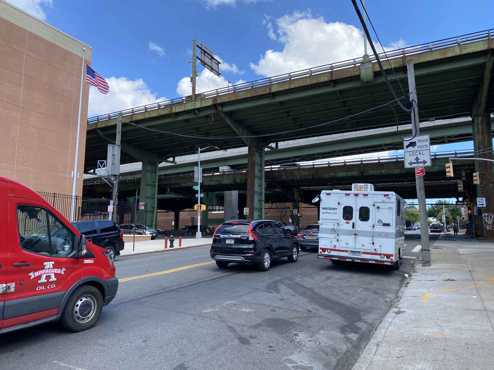

Buscarán plan de solución a problemas de tránsito en la 3 avenida de Brooklyn
Con pláticas ciudadanas, el DOT de la Ciudad de Nueva York iniciará el proceso del estudio de viabilidad para mejorar el tránsito de Sunset Park
Por Eduardo González
Sep. 29, 2022
Para tratar y socializar los problemas de tránsito en la zona de Sunset Park y dar una solución al tráfico de la 3ra Avenida, el Departamento de Transporte de la Ciudad de Nueva York realizará foros de participación con la comunidad, como antesala a un estudio de viabilidad de tránsito; esto, según representantes del Community Board del Distrito 7 de Brooklyn, se realizó tras una petición que duró 10 años.
Así lo comentó la titular de las comisiones de Transporte y del Tránsito de Tráilers, de la Junta Comunitaria del Distrito 7, Katherine Walsh, quien aseguró que el aval fue dado por el propio Comisionado de Transporte del Borough de Brooklyn, Keith Bray.
"Él ha confirmado que van a hacer parte del estudio, van a hacer los foros de participación de la comunidad (...) vamos a iniciar el proceso de planificación con el Departamento, el transporte y otras agencias y otros socios y organizaciones de la comunidad como vamos a trabajar en un proceso de divulgación, para establecer foro de la comunidad para que la gente pueda venir y hablar de sus experiencias en la 3ra Avenida”, dijo.
Tan solo en el cruce de esta avenida con la Calle 60, se han registrado 189 accidentes desde agosto de 2011 hasta el cierre de esta edición, en los que han resultado 352 personas lesionadas: el 93 por ciento, automovilistas.
Según la página NYC Crash Maper, en la mayoría de estos casos se desconoce lo que los provocó, pero registra como una de las principales causas, el hecho de que los automovilistas no ceden el paso.
Esto, adjunto al hecho de que el 37.79% de la extensión territorial del Distrito Comunitario 7 de Brooklyn está destinada a actividades industriales, hace que el tránsito de vehículos de carga se una constante sobre la 3 Avenida, que es la única que conecta hacia el Belt Parkway y el Gowanus Expressway, las vías rápidas que conectan el Borough de Brooklyn con Staten Island.
Este estudio, dice Katherine, ayudará a evaluar integralmente la zona y realizar modificaciones que no entorpezcan el tránsito de vehículos y aminoren riesgos a vecinos
“La razón por la que el estudio es tan importante es porque podremos evaluar cómo el tráfico se mueve y después, una vez que el estudio se complete, nos podrá hacer recomendaciones, que adjuntas a las preocupaciones de la comunidad, se realizarán estos cambios. dijo.
La ubicación de este cruce tiene varias particularidades a contemplar, que por las mañanas, entorpecen el tráfico, pues es la única salida hacia el Highway, y es generalmente utilizada por transportistas; además, en sus inmediaciones están el Magical Years Early Childhood Center, así como del otro lado, la Secundaria P.S. 506: The School of Journalism & Technology, lo que a decir de vecinos, intensifica el tránsito de niñas y niños por las mañanas.
“Hay muchos carros por lado que pasan por ese 59 que deja a los muchachos entrar a la escuela. Eso es una cosa, que es un problema, que los muchachos tienen que cuidarse, cruzar la calle, pero que estos carros pasan bien rápido”, aseguró Madeline Inocente, una vecina de Sunset Park que tiene viviendo en la zona más de 30 años.
Vecinos como Luis Álvarez, quien vive en la zona desde hace ocho años, aseguran que los semáforos duran muy poco, lo que representa un problema para quienes cruzan las calles rumbo hacia la guardería que está sobre la 60, así como los adultos mayores que tienen que esperar dos luces verdes para cruzar la avenida, quedándose muchas veces al centro del cruce.
“Aparte de que es una vía muy congestionada, es muy, muy amplia. Entonces los semáforos también a veces no dan el suficiente tiempo para pasar de un lado al otro. Es también es uno de los problemas que tiene (...) son dos, dos vías, o sea, por una dos vías por sentido, entonces cuesta. A veces toma tiempo y no es suficiente”, dijo.
Integer lacinia massa

I'm baby keytar narwhal pour-over, letterpress af salvia forage actually palo santo fanny pack authentic. YOLO hot chicken ugh, meditation VHS stumptown 8-bit before they sold out taiyaki cornhole truffaut. Banh mi affogato austin ennui air plant intelligentsia cliche skateboard kale chips wayfarers fixie tbh tumeric salvia. Post-ironic lyft austin twee, prism freegan plaid coloring book aesthetic activated charcoal lo-fi letterpress

I'm baby keytar narwhal pour-over, letterpress af salvia forage actually palo santo fanny pack authentic. YOLO hot chicken ugh, meditation VHS stumptown 8-bit before they sold out taiyaki cornhole truffaut. Banh mi affogato austin ennui air plant intelligentsia cliche skateboard kale chips wayfarers fixie tbh tumeric salvia. Post-ironic lyft austin twee, prism freegan plaid coloring book aesthetic activated charcoal lo-fi letterpress

I'm baby keytar narwhal pour-over, letterpress af salvia forage actually palo santo fanny pack authentic. YOLO hot chicken ugh, meditation VHS stumptown 8-bit before they sold out taiyaki cornhole truffaut. Banh mi affogato austin ennui air plant intelligentsia cliche skateboard kale chips wayfarers fixie tbh tumeric salvia. Post-ironic lyft austin twee, prism freegan plaid coloring book aesthetic activated charcoal lo-fi letterpress
I'm baby keytar narwhal pour-over, letterpress af salvia forage actually palo santo fanny pack authentic. YOLO hot chicken ugh, meditation VHS stumptown 8-bit before they sold out taiyaki cornhole truffaut. Banh mi affogato austin ennui air plant intelligentsia cliche skateboard kale chips wayfarers fixie tbh tumeric salvia. Post-ironic lyft austin twee, prism freegan plaid coloring book aesthetic activated charcoal lo-fi letterpress